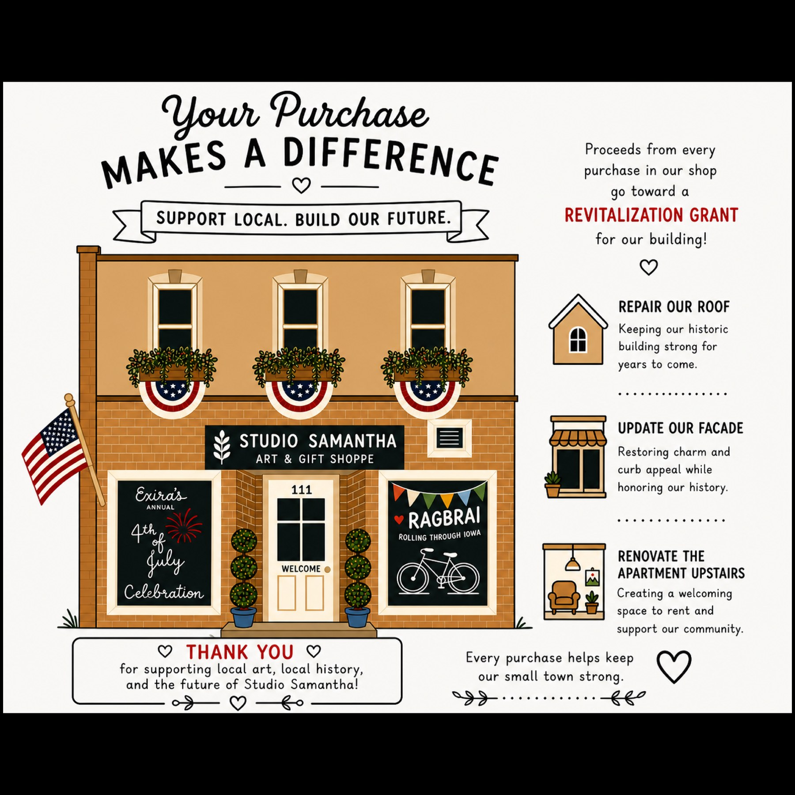

Built for vendor days
Preorders without the pileup
Turn event orders into a clean pickup flow.
VendorFlowDS gives small shops, makers, food stands, and event vendors a simple catalog, order queue, pickup board, and fulfillment view so customers are not stuck waiting in one long line.
Studio Samantha Summer Shop
23 preorders
New
Packing
Ready
Pickup board: 17 · 18 · 21 · 22
Simple Setup
How VendorFlowDS fits the day
Start with a public catalog, collect orders through your shop, then manage fulfillment from a vendor-friendly queue.
Publish the catalog
Show products, pickup windows, shipping notes, and preorder deadlines in one clean customer page.
Organize the queue
Convert incoming orders into easy pickup numbers, rack spots, and ready status updates.
Keep customers moving
Customers check the pickup board instead of crowding the table or asking for status every few minutes.
Learn what sold
See what moved, what was overbuilt, and what should be reordered for the next market or event.
Live Build
Modeled from a real summer souvenir shop
The first VendorFlowDS setup is being shaped around Studio Samantha's Exira summer souvenir preorders: tees, totes, hats, local pickup, shipping, Square catalog setup, and event-day order pickup.
Open the preorder catalog
Real Shops
Good fits for VendorFlowDS
Custom shirt bars
Customers choose the shirt and print, then watch for their pickup number while the team presses orders.
Sticker and art vendors
Keep backstock organized while customers browse a digital catalog and helpers bag orders.
Cupcake popups
Open preorders before the event, reduce sellout confusion, and separate pickup from browsing.
Face painting lines
Let families know the wait time and notify them when their turn is close.
Book and merch tables
Take event preorders so you pack smarter and bring the inventory people actually want.
Food trucks and drink stands
Move orders through a visual board instead of calling names into a crowd.